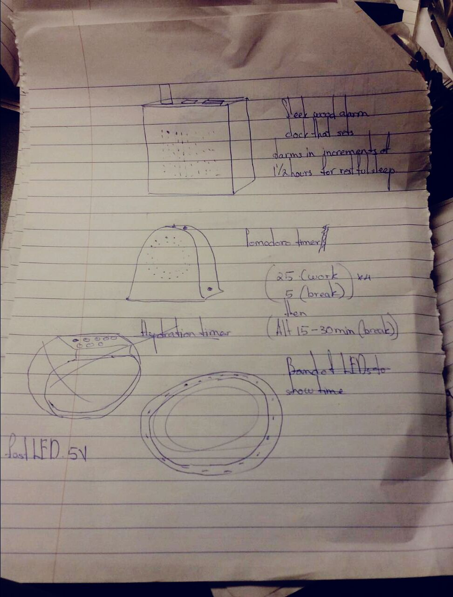
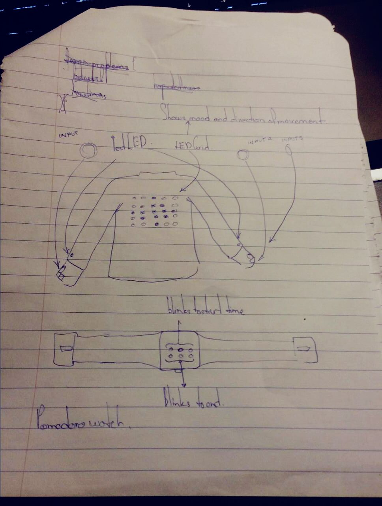
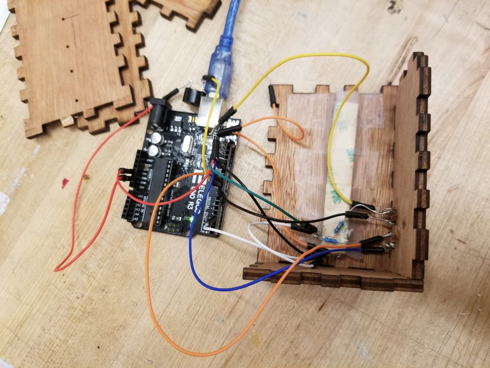
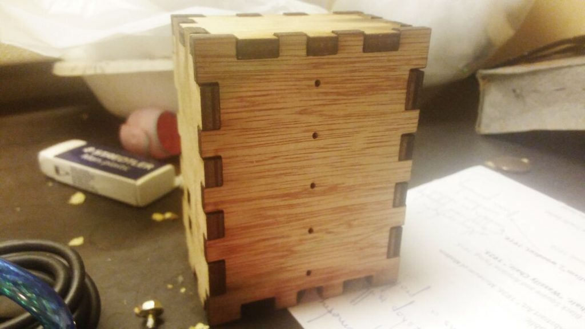
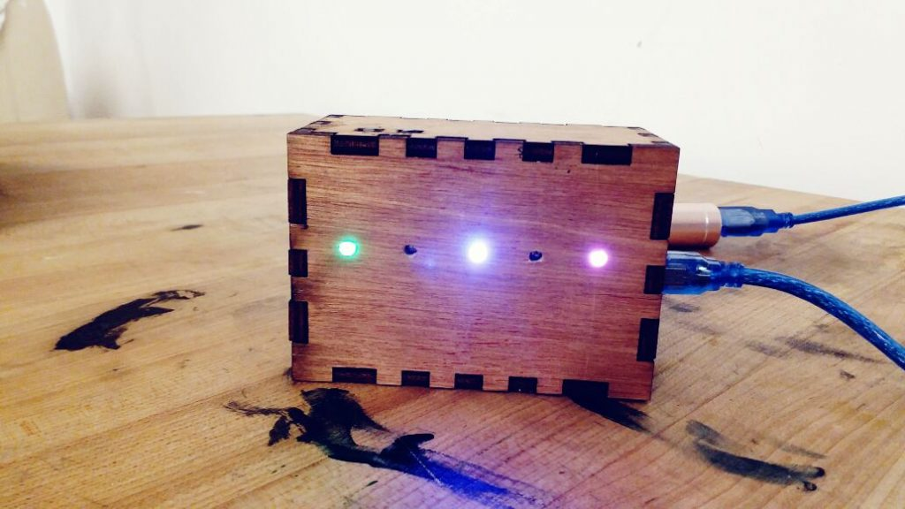

Simple Timer (ST) is a physical object that helps you focus on work while taking healthy breaks in
the middle. The device breaks down work into increasingly long intervals of time, gradually
encouraging the user to work longer while compartmentalizing time for breaks and helping the user be
more organised.
MY ROLE
Designer, Developer, Fabricator
HOW MIGHT WE...
Create a productivity application seperate from digital distractions
THE BEGINNING
I was inspired by the Pomodoro Technique and productivity apps like Forest.
The Pomodoro Technique is a time management method developed by Francesco Cirillo in the late 1980s. The technique uses a timer to break down work into intervals, traditionally 25 minutes in length, separated by short breaks.
Forest is a productivity app made to help you focus on a task. Every time you want to focus you plant a tree that will grow as long as you focus on the task you want to accomplish and will die if you leave the app and get distracted.
I have used both these apps/techniques on my phone and neither has been particularly good at increasing my productivity. All the productivity apps I have used on my phone have only resulted in me checking my phone every five minutes to surf the internet and access social media.
The Pomodoro Technique is a time management method developed by Francesco Cirillo in the late 1980s. The technique uses a timer to break down work into intervals, traditionally 25 minutes in length, separated by short breaks.
Forest is a productivity app made to help you focus on a task. Every time you want to focus you plant a tree that will grow as long as you focus on the task you want to accomplish and will die if you leave the app and get distracted.
I have used both these apps/techniques on my phone and neither has been particularly good at increasing my productivity. All the productivity apps I have used on my phone have only resulted in me checking my phone every five minutes to surf the internet and access social media.
EARLY SKETCHES
I sketched a few ideas for the timer. This was particularly difficult, as I had to communicate
information to the user without text or distracting, complex visuals.


PROBLEMS
The following were the mainchallenges & problems faced in the development of this project:
1
Designing & fabricating the device's physical shell & guts.
2
Devloping the UI with limited display technology.
3
Figuring out how to code something useful in C++.
DEVELOPMENT
I took the concept of the pomodoro timer and modified it a little. I added a counter that increases
the interval length every time you work. I changed the trademark red colour of the pomodoro timer to
a more inviting blue as the red colour was extremely piercing in the dark. I also added mood-lights
that act as a kind of nightlight/soothing background light, but after a few days of testing it
myself, I found that it wasn’t really effective.

The Mario themed alarm was effective at being a striking tune that pleasantly reminded me when to
work and when to relax. When I used a generic alarm tune I went into work in a bad mood, almost
dreading work. The Mario theme delighted me whenever I heard it.

I have eventually stripped down the object to be a device that breaks down work into increasingly
long intervals of time to gradually encourage the user to work longer while compartmentalizing time
and helping the user be more organised..

WHAT'S NEXT?
The next steps I wish to take is installing a way to interact with my phone. maybe develop an app to lock my phone for the duration of my work interval in order to make this device more effective. I would also like to make the shell sleeker and smaller by using a smaller Micro controller, using different material (maybe 3D-printed filament, acrylic, etc) and using different joinery methods to make the shell more classy.